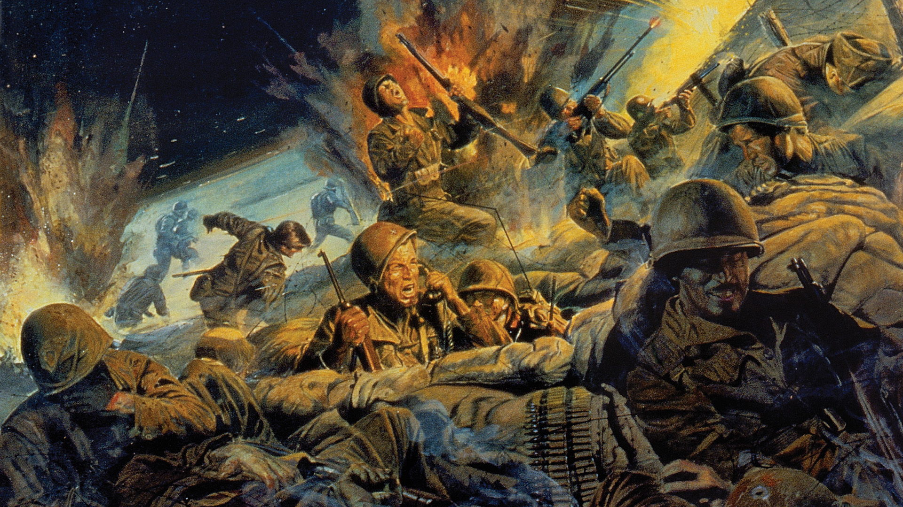

Poem of War, The Korean War...
Indexed Poem:
There is blood on the hills of KoreaTis the blood of the brave and true.
Where the 25th Brigade battled together
Under the banner of the Red, White and Blue.
As they marched over the fields of Korea
To the hill where the enemy lay.
They remembered the Brigadiers orders:
"These hills must be taken today."
Forward they marched into battle
With faces unsmiling and stern.
They Knew as they charged the hillside
That some would never return.
Some thought of their wives and mothers,
Some thought of their sweethearts so fair
And some as they plodded and stumbled,
Were reverently whispering a prayer.
There is blood on the hills of Korea,
It is the gift of freedom they love,
May their names live in glory forever,
And their souls rest in heaven above.
In the field, Korea
May 29, 1951
